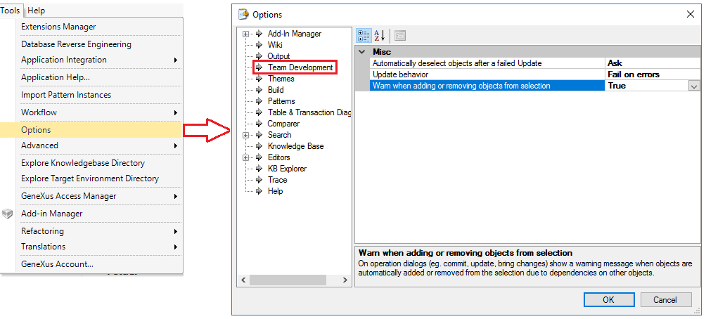

When applying an operation (commit, update, bring changes, etc.) objects are sometimes automatically added or removed from the selection due to dependencies on other objects. The purpose of this property is to warn the user before this happens. Values
DescriptionThis property can be enabled or disabled from the Tools-> Options-> Team Development  AvailabilityAvailable as of GeneXus 15 See AlsoUpdate behavior property
|
| Backlinks |
| Commit to GeneXus Server |